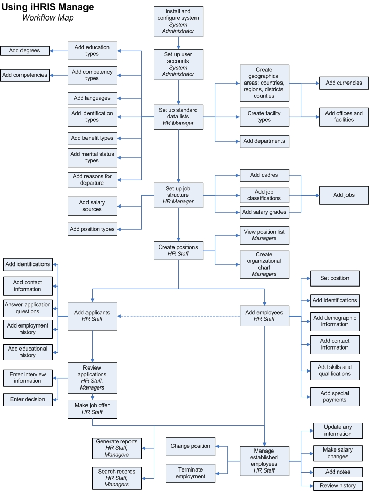

Understanding iHRIS Manage
Return to the iHRIS Manage User Manual index page.
iHRIS Manage is a human resources management tool that enables an organization to design and manage a comprehensive human resources strategy. iHRIS Manage helps an organization manage its workforce more effectively and efficiently, while reducing costs and data errors. Using the system, the HR professional can create a hierarchy of positions for an organization based on standard titles, job classifications and job descriptions, even spread over diverse geographic locations, offices and facilities. HR staff can solicit job applications for open positions, assign employees to fill positions and maintain a searchable database of all employees, their identifying information and their qualifications. Managers can track each employee's history with the organization, including their position and salary histories, and record the reason for departure when the employee leaves.
A decision maker within the organization can analyze this data to answer key human resource management and policy questions, such as:
-
Are employees deployed in positions that match their qualifications and education?
-
Are employees optimally deployed in locations to meet needs?
-
How many workers need to be recruited to fulfill anticipated vacancies?
-
Are pay rates equitable across similar jobs?
-
Are employees being promoted in alignment with competencies?
-
What are the reasons for employee attrition?
iHRIS Manage is primarily intended to be used to manage health care workers employed by a country's Ministry of Health, a hospital or other large health care organization, or a private provider of health care services. However, it may be readily adapted to other types of organizations and workforces.
Modules and Features
Version 4.0 of iHRIS Manage consists of several key modules designed to store and report position, employee and job applicant information:
-
User Management: Create and manage password-protected user accounts to control access to the system. Accounts are role-based so that non-authorized user actions and data sets are hidden from the user.
-
System Configuration: Turn on and off modules and set options for each module to customize the system and its features.
-
Database Management: Design a standard data structure by creating lists of items to be tracked in the database such as geographical locations, offices and facilities.
-
Position Management: Create positions with standardized descriptions, codes and qualifications within the organizational structure and manage the hiring, transfer and promotion process.
-
Applicant Management: Record information about a job applicant, including interview notes, and log hiring decisions.
-
Employee Management: Match an employee to a position, record important information about an employee and maintain a record of the employee's complete work history with the organization.
-
In-service Training Management: Track in-service trainings that employees have completed and assess competencies and continuing education credits earned from training (turned off by default).
-
Custom Reporting: Create reports to aggregate and analyze data in a variety of ways to answer key management and policy questions as well as generate staff lists and directories.
-
Search: Search for employee and applicant records in the system.
The following features ensure security and accuracy of data stored in the system:
-
Error checking and data correction by authorized data managers to ensure data integrity
-
Automated logging of the username, date and time when data are entered or changed for auditing purposes
-
Permanent archiving of all data changes to ensure a consistent record of each employee's history with the organization
iHRIS Manage will be extensible to CapacityPlus's other iHRIS products, iHRIS Qualify, a certification and licensing management system for health professionals, and iHRIS Plan, workforce modeling and planning software. Both of these systems are currently under development.
User Roles
Five user roles can be assigned in iHRIS Manage. The user role limits the activities that the person can perform in the system and helps enforce data quality and management protocols.
-
System Administrator is responsible for ensuring that system security procedures are enforced and for keeping the system maintained and functioning. The System Administrator can view any record and perform any action in the system. The System Administrator also configures the system, defines high-level reports and manages the user accounts.
-
HR Manager is a manager of human resources personnel and is responsible for managing all system data and for ensuring that data in the system are complete, correct and up to date. The HR Manager can view and enter data in any record. The HR Manager defines reports and analyzes data in order to make organizational or individual HR decisions. In addition, the HR Manager is the only role (other than the System Administrator) that can create standard lists of data, configure the system's job structure and correct data entered in the system.
-
HR Staff is a data entry person in human resources who is responsible for entering and updating data in the system. The HR Staff role can view and enter data in any record in the system and can view reports. However, the HR Staff role cannot correct erroneous information, define reports or create standard lists of data. The integrity of the data entered by HR Staff is enforced by the HR Manager.
-
Executive Manager may manage the entire organization or one district, department, office or facility within the organization. The Executive Manager views reports and analyzes data entered in the system in order to make HR decisions and set organizational policy. The Executive Manager can view any record in the system, review job applications and access all reports but cannot update or change data entered in the system.
-
Training Manager manages in-service training programs for employees and updates employee competencies gained by training. The Training Manager can only update the Trainings section of an employee's record. (These functions may also be completed by HR Managers or HR Staff.)
System Functions
The diagram below illustrates the flow of actions through the iHRIS Manage system from the time of initial installation and configuration to ongoing maintenance of employee records. The role that performs each action is listed in italics underneath the action. Actions should be performed in the general order indicated, although updates and changes can be made at any time.

The following system functions are supported by Version 4.0 of iHRIS Manage.
System administration functions
Install and configure system: The System Administrator installs the system files and accesses the configuration screen to set global system options, install and turn on modules, and set options for modules.
Set up user accounts: The System Administrator creates password-protected user accounts for all authorized users of the system and assigns each user a role. If the user information changes, the System Administrator updates the user account. If the user no longer has access to the system, the System Administrator disables the user account.
Database management functions
Set up standard data lists: The HR Manager determines which specific data items to track and report on in the system, and updates lists to include those items. These lists determine the selection items in dropdown menus used when creating employee records and define the data standards used by the organization. These lists include offices, facilities and departments used in the organization; items used to define employee characteristics and competencies, such as marital status; geographical locations; and training courses offered to employees.
Position management functions
Set up job structure: The HR Manager creates a job structure to match the organizational structure by defining the cadres, job classifications, salary grades and jobs used within the organization.
Create positions: HR Staff or the HR Manager creates positions that exist in the organization. Each position is linked to a job, and there may be several positions for each generic job. A position is filled by one employee and represents one spot on the organizational chart. Positions marked as "open" are available to be filled by an existing employee or job applicant.
Employment management functions
Add employee: At any time, HR Staff can add a person to the system as an employee. This includes recording the employee's name, nationality and geographical area of residence, as well as information about the employee, such as identification numbers, demographic information and contact information. In addition, the employee's qualifications and educational and employment history may be recorded.
Manage employees: HR Staff record any updates or changes to an employee's information when they occur, including changes in position or salary, termination of employment and a log of notes about the employee. HR Staff, the HR Manager or Executive Managers may review history of name changes, position changes, salary changes and notes at any time.
Applicant management functions
Note: This module may be disabled if not needed. It is enabled by default.
Add applicant: When a person applies for an open position at the organization, HR Staff add the applicant as a record in the system with the applicant's name, nationality, geographical area of residence and supporting information, including required identifications, contact information, employment history and educational history. HR Staff can complete a standard job application form for the applicant, as well. Note that current employees may also apply for open positions.
Review applications and make job offers: HR Staff, the HR Manager and Executive Managers review the applications for an open position and record notes about each applicant, including interview notes and notes about the decision whether to hire the applicant. Once an applicant has been hired to fill an open position, HR Staff convert the applicant to an employee and assign the position to the person.
In-service Training Management Functions
Note: This module may be disabled if not needed. It is disabled by default.
Manage a training program: The Training Manager or HR Manager enters information about available training courses into the system for selection when scheduling employees for training. Training programs include funders of training courses, institutions hosting courses, names and schedules of available courses, competencies earned by taking the course and continuing education credits. Requests for training and evaluations of employees after completing training can also be tracked.
Schedule an employee for training: The Training Manager or HR Staff can schedule an employee to take a training course after the training is requested by the employee, the supervisor, HR or some other requestor. Once the employee has completed the course, the Training Manager or HR Staff can evaluate the employee. The evaluation is retained in the employee's evaluation history. If an employee gains new competencies by completing a training course, the Training Manager or HR Staff can asses those competencies after the employee has completed the course. Assessed competencies are then added to the employee's qualifications.
Search
All users can search the system for employee and position records. They may then review the record on the screen or print a copy.
Reporting
iHRIS Manage includes a customized report builder that enables System Administrators to define reports based on any data entered in the system. In addition, the system is installed with a large number of pre-defined standard reports that any user can view as a table or chart, export or print.
In addition, System Administrators may export data from iHRIS Manage for use in other instances of the system or in other systems. Data may also be imported into iHRIS Manage.
Planned Features
Version 4.0 of iHRIS Manage, which this manual accompanies, provides a complete solution for setting up an organization's position structure and managing job applications and employee information. Later releases will support additional modules and functions, including:
-
Customizable roles to enable System Administrators to create roles other than the five pre-configured roles and assign them tasks that they can perform in the system
-
Customizable headers to enable database managers to easily change header or field names for their context (i.e., change District to State or Province).
-
Self-service option to enable employees and supervisors to view and update their records in the system while protecting private and sensitive data
New features and development are ongoing. As this is an Open Source development project, volunteers and other organizations may also contribute to the core code. Check the iHRIS Manage page (http://www.capacityplus.org/hris/suite/ihris_manage.php) on the HRIS Strengthening Website for the most up-to-date list of planned features and a development calendar.
{Return to the iHRIS Manage User Manual index page.
Source
Help page shipped in ihris-suite-4.3.3 (GPL-3.0, © IntraHealth International), sha256 12846a9cada53ce7c430403cdf30d53deeeb1816356baa177b51f32a46581341, at:
ihris-manage/modules/manage-help/static/help/ihris_add_disciplinary_action_information.htmlihris-manage/modules/manage-help/static/help/ihris_understanding_ihris_manage.htmlihris-manage/modules/manage-help/static/help/ihris_understanding_ihris_manage_4.0.html